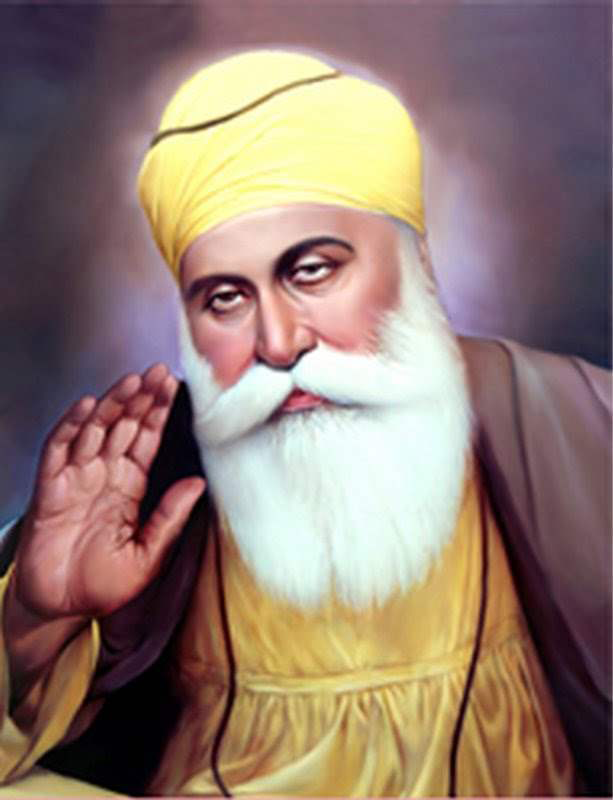

|
|
|
 |
The First Guru - Guru Nanak Dev ji (1469 - 1539)
Name : Nanak Dev Parents : Mehta Kalu and Mata Tripta Devi Born : April 15, 1469, Nankana Sahib Siblings :Bebe Nanaki Ji Spouse : Mata Sulakhani Children :Sri chand and Lakhmi Das Guruship: 1469 to 15 39 Joti Jot :On Monday 22 September, 1539 at Kartarpur Age :69 years Bani :974 Shabads in 19 Ragas, Gurbani Includes Japji, Sidh Gohst, Sohilaa, Dakhni Onkar, Asa di Var, Patti, Bara Mah |

The Bounteous Lord heard the anguished cry and so, Guru Nanak. He sent to this world of woe. ( Bhai Gurdas Ji) Guru Nanak Sahib (the First Nanak, the founder of Sikhism) was born on 15th April, 1469 at Rai-Bhoi-di Talwandi in the present distrect of Shekhupura (Pakistan),now Nanakana Sahib. The Birthday of Guru Nanak Sahib is celebrated on 15th Kartik Puranmashi i.e. full moon day of the month Kartik. On this day the Birthday of Guru Nanak Sahib is celebrated every year. (But some other chronicals state that Guru Nanak Sahib was born on 20th October,1469) Guru Nanak's father, Mehta Kalyan Das, more popularly known as Mehta Kalu was the agent and Chief Accountant of Rai Bular. Guru Nanak 's mother was Mata Tripta, a simple, pious and extremely religious woman. Nanak had an elder sister, Nanki, who always cherished her younger brother. Nanak was an extra-ordinary and different child in many ways. God provided him with contemplative mind and rational thinking. At the age of seven, he learnt Hindi and Sanskrit. He surprised his teachers with the sublimity of his extra-ordinary knowledge about divine things. At the age of thirteen, he learned Persian and Sanskrit and at the age of 16, he was the most learned young man in the region. He was married to Mata Sulakhni ji, who gave birth to two sons: Sri Chand and Lakhmi Das. In November 1504, Guru Nanak's elder sister Nanaki ji took him to Sultanpurlodhi where her husband Jai Ram ji got him the Job of storekeeper in the Modikhana of the local Nawab, Daulat Khan Lodhi. At the age of 38, in August 1507, Guru Nanak Sahib heard God 's call to dedicate himself to the service of humanity after bathing in "Vain Nadi" (a small river) Near Sultanpur Lodhi. The very first sentence which he ' uttered then was, " There is no Hindu, no Musalman". He now undertook long travels to preach his unique and divine doctrine (Sikhism). After visiting different places in Punjab, he decided to proceed on four long tours covering different religious places in India and abroad. These tours are called Char Udasis of Guru Nanak Sahib. During the four journeys, Guru Nanak Sahib visited different religious places preaching Sikhism. He went to Kurukshetra, Haridwar, Joshi Math, Ratha Sahib, Gorakh Matta (Nanak Matta), Audhya, Prayag, Varanasi, Gaya, Patna, Dhubri and Gauhati in Assam, Dacca, Puri, Cuttock, Rameshwaram, Ceylon, Bidar, Baroach, Somnath, Dwarka, Janagarh, Ujjain, Ajmer, Mathura, Pakpattan, Talwandi, Lahore, Sultanpur, Bilaspur, Rawalsar, Jawalaji, Spiti Vally, Tibet, Ladakh, Kargil, Amarnath, Srinagar and Baramula. Guru Nanak Sahib also paid visit to Muslim holy places. In this regard he went to Mecca, Medina, Beghdad via Multan, Peshawar Sakhar, Son Miani, Hinglaj etc. Some accounts say that Guru Sahib reached Mecca by sea-route. Guru Sahib also visited Syra, Turkey and Tehran (the present capital of Iran). From Tehran Guru Sahib set out on the caravan route and covered Kabul, Kandhar and Jalalabad. The real aim of the tour was awakening the people to realise the truth about God and to introduce Sikhism. He established a network of preaching centres of Sikhism which were called "Manjis". He appointed able and committed followers as its head (preacher of Sikhism). The basic tenents of Sikhism were wilfully conceived by the people from all walks of life. The seeds of Sikhism were sown all over India and abroad in well-planned manner. In the year 1520, Babar attacked India. His troops slaughtered thousands of innocent civilians of all walks of life. Women and children were made captives and all their property looted at Amiabad. Guru Nanak Sahib challenged this act of barbarity in strong words. He was arrested and released, shortly after making Babar realising his blunder. All the prisoners were also released. Guru Nanak Sahib settled down at Kartarpur city (now in Pakistan) which was founded by him in 1522 and spent the rest of his life there (1522-1539). There was daily Kirtan and the institution of Langar (free kitchen) was introduced. Knowing that the end was drawing near, Guru Nanak Sahib, after testing his two sons and some followers, installed Bhai Lehna ji (Guru Angad Sahib) as the Second Nanak in 1539, and after a few days passed into Sachkhand on 22nd September, 1539. Thus ended the wordly journey of this god-gifted Master (Guru) of mankind. He rejected the path of renunciation Tyaga or Yoga, the authority of the Vedas and the Hindu caste system. Guru Nanak Sahib emphasised the leading of householder's life (Grista), unattached to gross materialism. The services of mankind Sewa, Kirtan, Satsang and faith in 'One' Omnipotent God are the basic concepts of Sikhism established by Guru Nanak Sahib. Thus he laid the foundations of Sikhism. He preached new idea of God as Supreme, Universal, All-powerful and truthful. God is Formless (Nirankar), the Sole, the Creator, the self-existent, the Incomprehensible and the Ever-lasting and the creator of all things (Karta Purakh). God is infinite, All knowing, True, All-giver, Nirvair, and Omnipotent. He is Satnam, the Eternal and Absolute Truth. As a social reformer Guru Nanak Sahib upheld the cause of women, downtrodden and the poors. He attacked the citadel of caste system of Hindus and theocracy of Muslim rulers. He was a born poet. He wrote 974 hyms comprising Japji Sahib, Asa-Di-Var, Bara-Mah, Sidh-Gosht, Onkar (Dakhani) and these were included in Guru Granth Sahib by Guru Arjan Sahib. He was also a perfect musician. He with the company of Bhai Mardana compsed such tunes in various Indian classical Ragas that charmed and tawed wild creatures like Babar, subdued saging kings, raved bigots and tyrants, made thugs and robbers saints. He was a reformer as well as a revolutionary. God had endowed him with a contemplative mind and pious disposition. Guru Arjan Sahib called him "the image of God, nay, God Himself". |
|
{kind=link}